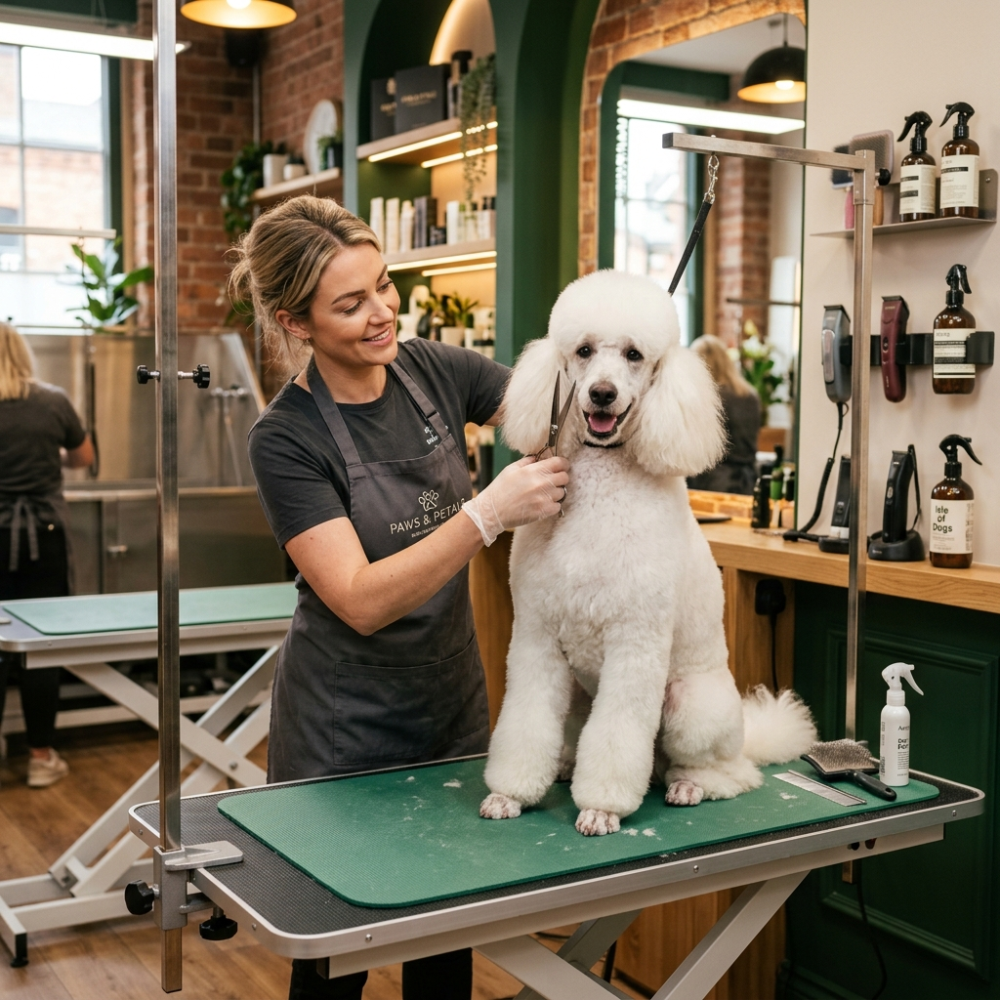
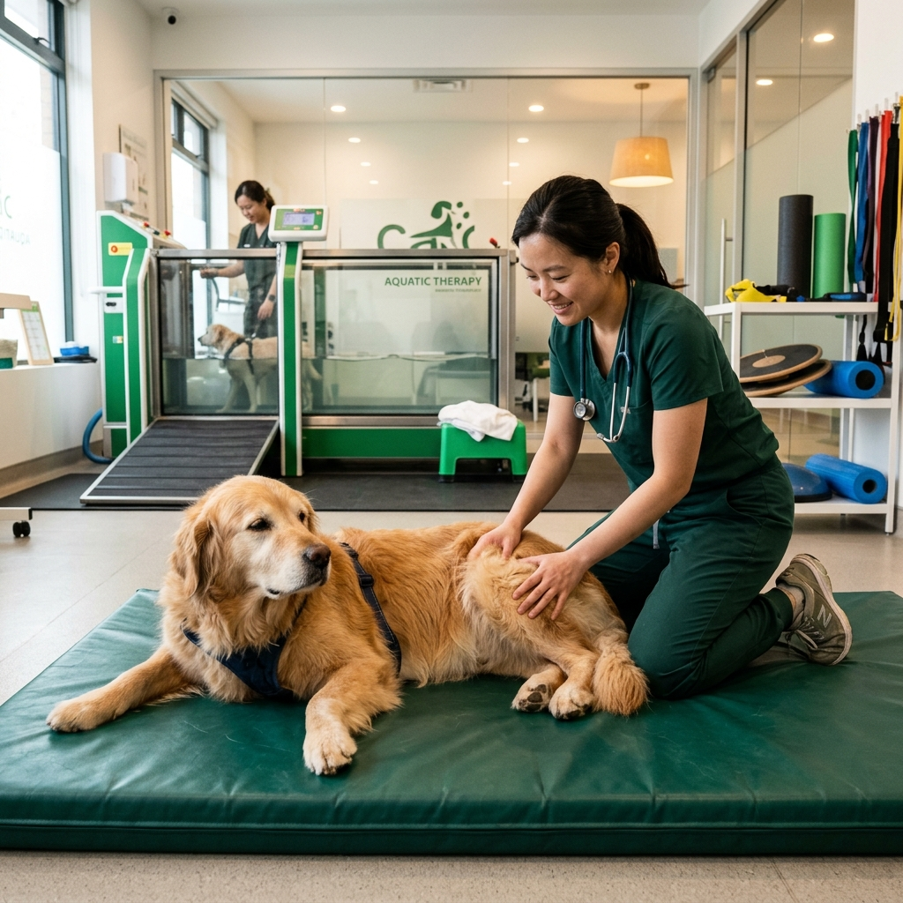
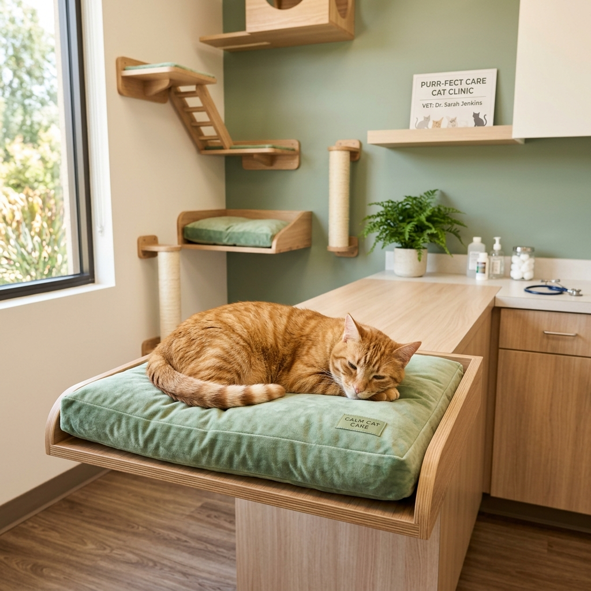
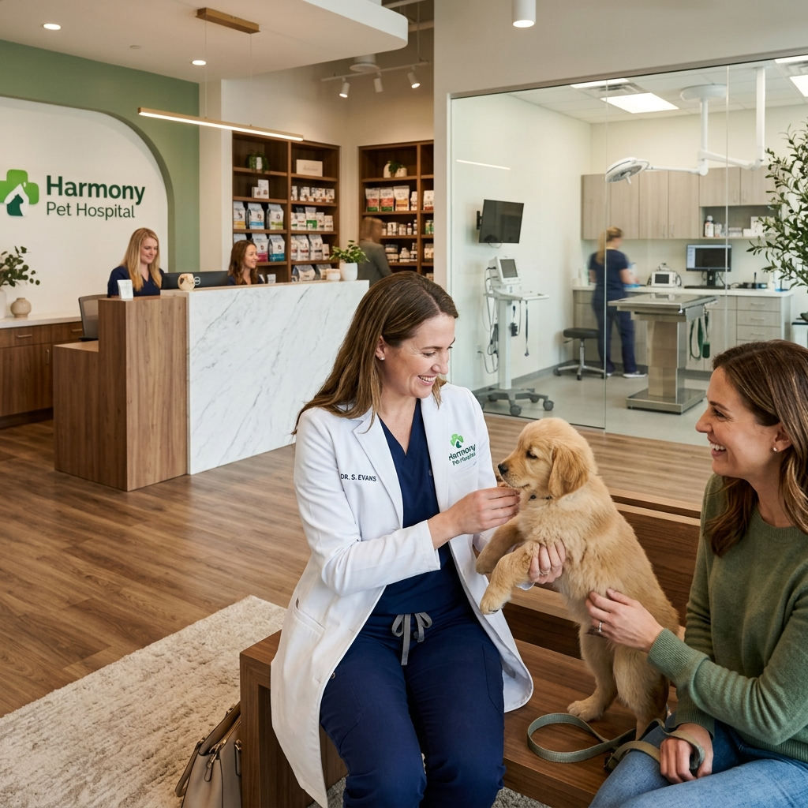

Cuidamos do seu pet com carinho e excelência em cada detalhe. Conheça tudo o que oferecemos.
Nosso time de veterinários está disponível 24 horas por dia, 7 dias por semana, pronto para atender qualquer emergência. Com estrutura hospitalar completa, seu pet recebe o atendimento que precisa, quando precisa.
Contamos com centro cirúrgico equipado, UTI veterinária, sala de internação e monitoramento constante para garantir a segurança do seu companheiro.
Realizamos exames laboratoriais completos, ultrassonografia, radiografia digital, ecocardiograma e outros diagnósticos avançados. Tudo para identificar qualquer problema com rapidez e precisão.
Os resultados são analisados por nossa equipe veterinária especializada, que elabora o plano de tratamento mais adequado para o seu pet.
Nosso serviço de banho e tosa vai muito além da estética. Utilizamos produtos premium, hipoalergênicos, e técnicas que respeitam o temperamento e as necessidades de cada pet.
Oferecemos tosa estilizada, banho terapêutico, hidratação de pelos e cuidados especiais para raças sensíveis. Tudo com o carinho que seu pet merece.

Nosso programa de fisioterapia veterinária é voltado para a reabilitação pós-cirúrgica, tratamento de doenças articulares e melhora da qualidade de vida de pets idosos ou com problemas de locomoção.
Contamos com equipamentos especializados e profissionais dedicados a devolver mobilidade e bem-estar ao seu companheiro.

Sabemos que alguns pets ficam estressados ao sair de casa. Por isso, levamos o cuidado veterinário até você. Realizamos consultas, vacinação, coleta de exames e acompanhamento no conforto do seu lar.
Ideal para pets idosos, com dificuldade de locomoção ou que precisam de acompanhamento contínuo sem sair de casa.

Temos uma loja completa com medicamentos veterinários, rações premium e super premium, suplementos, acessórios, brinquedos e tudo que seu pet precisa para o dia a dia.
Nossos profissionais estão sempre prontos para orientar sobre a melhor alimentação e os cuidados específicos para a raça e idade do seu pet.

Agende agora pelo WhatsApp e conheça toda a nossa estrutura.